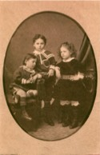

Beaubien-Perrault-Benington - Person Sheet
Beaubien-Perrault-Benington - Person Sheet
NameM. Elodie Justine Lacoste
Birth1 Oct 1877, Montréal, Québec260
Death25 Oct 1967, Outremont, Québec
Burial1967, Notre-Dame-des-Neiges, Montréal, Quebec
Occupationadministratrice
FatherSir Alexandre Lacoste (1842-1923)
MotherM. Louise Globensky (1849-1919)
Spouses

Birth29 Oct 1867, Outremont, Québec20
Death14 Nov 1939, Outremont, Québec260
Burial1939, Notre-Dame-des-Neiges, Montréal, Quebec
Occupationcourtier
FatherHon. Louis Joseph Denis Benjamin Beaubien (1837-1915)
MotherSuzanne Lauretta Stuart (1844-1936)
Marriage25 Oct 1899, Eglise St-Jacques, Montréal, Québec20
No Children
Notes for M. Elodie Justine Lacoste
Founder of Hopital Sainte-Justine in Montréal 1907. No children.
234 Fille de Marie-Louise Globenski et du juge Alexandre Lacoste, Justine Lacoste-Beaubien est née à Montréal en 1877. Elle épouse en 1899 Louis de Gaspé-Beaubien, homme d'affaires originaire d'Outremont. Sensibilisée à la mortalité enfantile par Irma Levasseur, première femme-médecin canadienne-française, Justine Lacoste participe en 1907 à la création du premier hôpital pour enfant à Montréal. Elle poursuit son oeuvre pendant de nombreuses années et, en 1951, l'Hôpital Sainte-Justine, dont le nom fut attribué en son honneur, se transporte sur la Côte-Sainte-Catherine, son site actuel. Le nom de Justine Lacoste-Beaubien demeurera associé à l'histoire et à l'évolution de l'Hôpital Sainte-Justine jusqu'à sa mort survenue en 1967
260 née dans la maison familiale, au 71 rue St-Hubert. Le premier hopital est dans une maison au 644, reu St-Denis, appartenant au sen. Damien Rolland, frère d’Euphrosine Rolland, une des fondatrices de l’hopital, qui y consacra 28 ans de sa vie. D’autres collaboratrices furent Mmes J. Macdonald, Jules Hamel, Arthur Berthiaume, Théodule Bruneau, et Mlle Thais Lacoste [et Mme Alfred Thibodeau]. La directrice médicale était le Dr. Irma LeVasseur. Le comité honoraire inclut Mme Raoul Dandurand, Lady Lacoste, Mmes Rosaire Thibodeau, Louis Beaubien (nee Stuart), F.L. Beique, Arthur Boyer, F.D. Monk, Jos Leman, Damien Rolland, H. Gerin-Lajoie, et Mlle Annonciade Payette (fille du maire de Montreal). Le Comite executif se compose de Justine Lacoste beaubien (pres), Mme Raoul masson et Jules Hamel (VP), Jules Hamel (tres), Thais Lacoste (sec), Theodule Bruneau (Lucie Lamoureux) et Gerin Normand (Conseillieres). la premiere surintendante était Mlle Léda Larue, première infirmière diplomée de l’hopital Notre-Dame. en 1908, l’hopital amenage au 820, rue Delorimier (angle Rachel). Les Filles de la Sagesse se joignent à l’hopital en 1910. En 1911, Justine lance un projet de construction d’un nouvel hopital, qui ouvrira en 1914 au 1879 rue St-Denis. Un conseil est créé, consistant de l’Hon Damien Rolland, Jos. Beaudry, Jos. Beaubien, et les Drs. Emile Ostiguy et Séraphin Boucher. La direction de l’hopital demeure entièrement féminine, ce qui cause parfois des tensions avec le personnel médical. L’hopital est affilie a la faculté de médecine de l’Université laval à Montréal en 1914. Les gardes-malades travaillent 12 heures par jour, 6 jours et demi par semaine. O.B.E. 1934. C.B.E 1943. Début des travaux de construction de l’hopital actuel, chemin Ste-Catherine. John Kennedy visite le chantier en 1954. Inauguration officielle 1957. Visite de la reine 1959. Inauguration du programme d’assurance-hospitalisation 1.1.1961. Grand bouleversement de l’hopital. Grève des infirmieres 1963.
234 Fille de Marie-Louise Globenski et du juge Alexandre Lacoste, Justine Lacoste-Beaubien est née à Montréal en 1877. Elle épouse en 1899 Louis de Gaspé-Beaubien, homme d'affaires originaire d'Outremont. Sensibilisée à la mortalité enfantile par Irma Levasseur, première femme-médecin canadienne-française, Justine Lacoste participe en 1907 à la création du premier hôpital pour enfant à Montréal. Elle poursuit son oeuvre pendant de nombreuses années et, en 1951, l'Hôpital Sainte-Justine, dont le nom fut attribué en son honneur, se transporte sur la Côte-Sainte-Catherine, son site actuel. Le nom de Justine Lacoste-Beaubien demeurera associé à l'histoire et à l'évolution de l'Hôpital Sainte-Justine jusqu'à sa mort survenue en 1967
260 née dans la maison familiale, au 71 rue St-Hubert. Le premier hopital est dans une maison au 644, reu St-Denis, appartenant au sen. Damien Rolland, frère d’Euphrosine Rolland, une des fondatrices de l’hopital, qui y consacra 28 ans de sa vie. D’autres collaboratrices furent Mmes J. Macdonald, Jules Hamel, Arthur Berthiaume, Théodule Bruneau, et Mlle Thais Lacoste [et Mme Alfred Thibodeau]. La directrice médicale était le Dr. Irma LeVasseur. Le comité honoraire inclut Mme Raoul Dandurand, Lady Lacoste, Mmes Rosaire Thibodeau, Louis Beaubien (nee Stuart), F.L. Beique, Arthur Boyer, F.D. Monk, Jos Leman, Damien Rolland, H. Gerin-Lajoie, et Mlle Annonciade Payette (fille du maire de Montreal). Le Comite executif se compose de Justine Lacoste beaubien (pres), Mme Raoul masson et Jules Hamel (VP), Jules Hamel (tres), Thais Lacoste (sec), Theodule Bruneau (Lucie Lamoureux) et Gerin Normand (Conseillieres). la premiere surintendante était Mlle Léda Larue, première infirmière diplomée de l’hopital Notre-Dame. en 1908, l’hopital amenage au 820, rue Delorimier (angle Rachel). Les Filles de la Sagesse se joignent à l’hopital en 1910. En 1911, Justine lance un projet de construction d’un nouvel hopital, qui ouvrira en 1914 au 1879 rue St-Denis. Un conseil est créé, consistant de l’Hon Damien Rolland, Jos. Beaudry, Jos. Beaubien, et les Drs. Emile Ostiguy et Séraphin Boucher. La direction de l’hopital demeure entièrement féminine, ce qui cause parfois des tensions avec le personnel médical. L’hopital est affilie a la faculté de médecine de l’Université laval à Montréal en 1914. Les gardes-malades travaillent 12 heures par jour, 6 jours et demi par semaine. O.B.E. 1934. C.B.E 1943. Début des travaux de construction de l’hopital actuel, chemin Ste-Catherine. John Kennedy visite le chantier en 1954. Inauguration officielle 1957. Visite de la reine 1959. Inauguration du programme d’assurance-hospitalisation 1.1.1961. Grand bouleversement de l’hopital. Grève des infirmieres 1963.